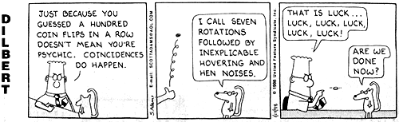
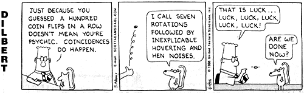
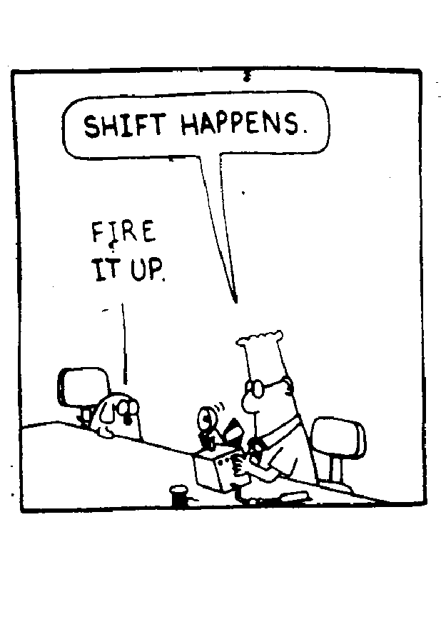

Algoritmos Probabilísticos
Segundo semestre de 2006
sala: PA03
Horário: 4a e 6a 17:30
Algoritmos ProbabilísticosSegundo semestre de 2006sala: PA03Horário: 4a e 6a 17:30 |
|
 Para uma resenha do assunto:
A Taste of Randomized Computations.
(ps)
Para uma resenha do assunto:
A Taste of Randomized Computations.
(ps)
Conteúdo:
|
 

|

Carga horária: 60. Créditos: 4. Responsável: Jair Donadelli.
Bibliografia:
Bibliografia Complementar:
|
 |
August 2006 September 2006 October 2006
Su Mo Tu We Th Fr Sa Su Mo Tu We Th Fr Sa Su Mo Tu We Th Fr Sa
1 2 3 4 5 1 2 1 2 3 4 5 6 7
6 7 8 9 10 11 12 3 4 5 6 7 8 9 8 9 10 11 12 13 14
13 14 15 16 17 18 19 10 11 12 13 14 15 16 15 16 17 18 19 20 21
20 21 22 23 24 25 26 17 18 19 20 21 22 23 22 23 24 25 26 27 28
27 28 29 30 31 24 25 26 27 28 29 30 29 30 31
October 2006 November 2006 December 2006
Su Mo Tu We Th Fr Sa Su Mo Tu We Th Fr Sa Su Mo Tu We Th Fr Sa
1 2 3 4 5 6 7 1 2 3 4 1 2
8 9 10 11 12 13 14 5 6 7 8 9 10 11 3 4 5 6 7 8 9
15 16 17 18 19 20 21 12 13 14 15 16 17 18 10 11 12 13 14 15 16
22 23 24 25 26 27 28 19 20 21 22 23 24 25 17 18 19 20 21 22 23
29 30 31 26 27 28 29 30 24 25 26 27 28 29 30
31
aula 01 - exemplos: Quicksort aleatorizado; calculo aproximado de pi
aula 02 - probabilidade dicreta, definicoes e propriedades elementares
aula 03 - probabilidade condicional, algroritmo pobabilístico para
identidade polinomial, espaço poduto, lei das
probabilidades totais.
aula 04 - algoritmo probabilístico para igualdade de matrizes.
aula 05 - igualdade de strings e busca de padrões.
aula 06 - probilidade discreta (caso enumeravel), variavel aleatoria,
valor esperado
aula 07 - v.a. Bernoulli, Binomial e geometrica. Esperanca condicional
aula 08 - tempo medio Quicksort, "cupon collector"
aula 09 - momentos e desvios - desigualdades de Markov e Chebyshev
aula 10 - funcao geadora de momentos
aula 11 - leis de grandes desvios - Chernoff
aula 12 - leis de grandes desvios - Chernoff
aula 13 - roteamento no hipercubo
aula 14 - roteamento no hipercubo
aula 15 - distribuicoes continuas: vars aleatorias, distribuicao,
funcao densidade e esperanca.
aula 16 - metodo monte carlo, estimacao de pi, agulhas de Buffon
aula 17 - cadeias de Markov
aula 18 - cadeias de Markov
aula 19 - 2SAT
aula 20 - classificação de estados e "gambler ruin"
aula 21 - distribuicoes estacionarias, passeios aleatorios em grafos
aula 22 - s-t conexidade
 FIM
FIM